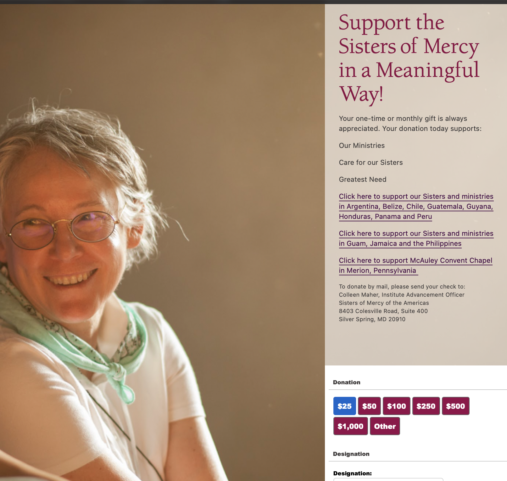
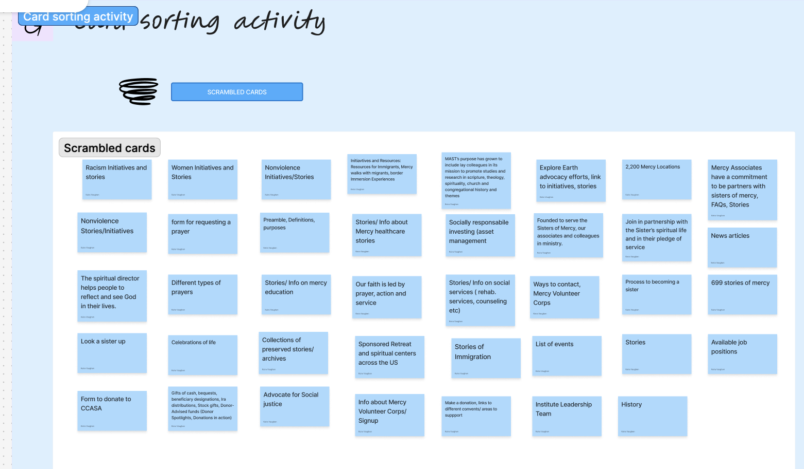

Redesigned the donation experience for The Sisters of Mercy to increase users, reduce friction, and create a more personalized experience.

UX/UI Researcher & Designer
10 Weeks
Figma, FigJam, Google Forms, Adobe Illustrator
Design Goal: Create a clear, intuitive and trustworthy donation flow.

Doesnt have a disability or accessibility page to help users that have different needs
No exit path between tabs
Help is kind of buried into nested topics
Add accessibility section that pops up asking what users may need like different needs
Add a section that shows nesting with links that will allow users to go back on. Example like: Our work>Mercy For Justice> Social Justice Resources
Simplify the layout by removing some of the non essential graphics that may appear as unnecessary photos
Provide immediate feedback when the error occurs. As well as explanations as to why it is wrong and next steps.
Add more customization to website like text size, background colors
1. Wireframes 2. Lo-Fidelity Prototype 3. Mid-Fidelity Prototype 4. High-Fidelity Prototype
Tested with a college aged student and a recurring donor